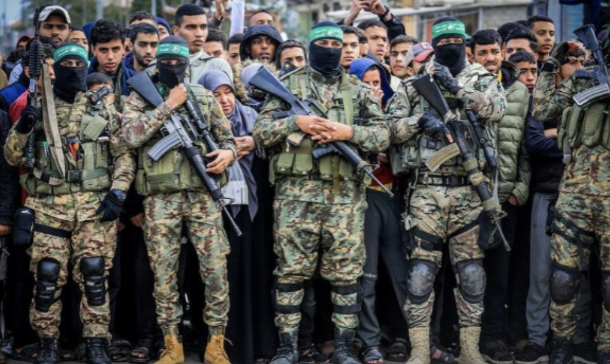

מבזקים
◀ לכל המבזקיםלאחר חודש: אותרה גופתו של תושב אופקים שטבע בכנרת
בכיר חמאס התראיין בטבח והבהיר: הארגון לא ימסור את נשקו
עומס חום ניכר ביום הצום: אזהרה על חום קיצוני במזרח, בנגב ובעמקים
בתוך שעה: שני חשודים באירוע פיגוע נוטרלו ונעצרו במחוז חוף
שליח טראמפ למשפחות החטופים: "ישראל רוצה לסיים את המלחמה"
גורמים פלסטינים: קמפיין הרעב בעזה מסייע לחמאס ומונע עסקה
בכיר חמאס התראיין וטען: הארגון לא
ימסור את נשקו
בכיר חמאס הבהיר כי הארגון אינו מתכוון למסור את נשקו, וטען כי כל עוד הכיבוש נמשך, הנשק יישאר בידי הארגון. לדבריו, סוגיית פירוק חמאס מנשקו אינה עומדת על הפרק מבחינת הנהגת הארגון, והוא הדגיש כי כל דיון עתידי בנושא יהיה תלוי בהתפתחויות המדיניות ובמצב בשטח. הבכיר הוסיף כי חמאס רואה בנשק חלק מרכזי מיכולתו לפעול מול ישראל, ולכן אינו מוכן לוותר עליו במסגרת הסדר שאינו כולל שינוי מהותי במצב המדיני. לדבריו, הארגון עדיין מעוניין בהגעה להסכמות בנוגע להפסקת הלחימה, אך לא יסכים לתנאים שיגבילו את כוחו או יביאו לפירוקו מנשקו באופן מלא.
